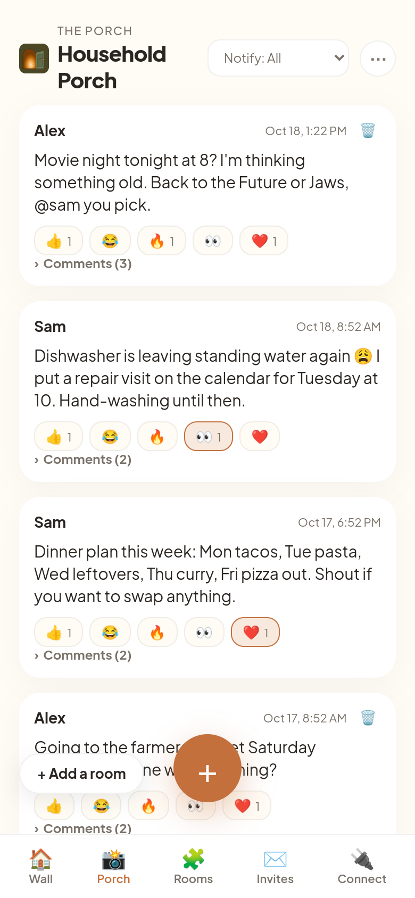
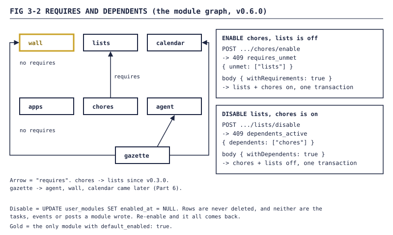
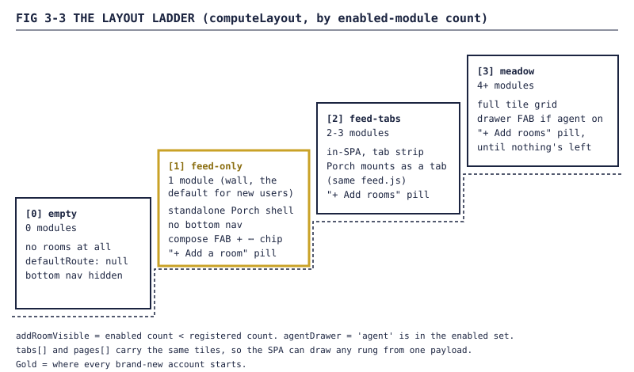
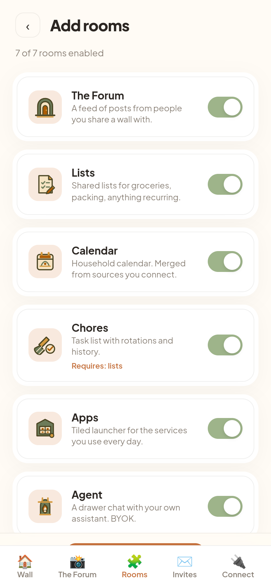
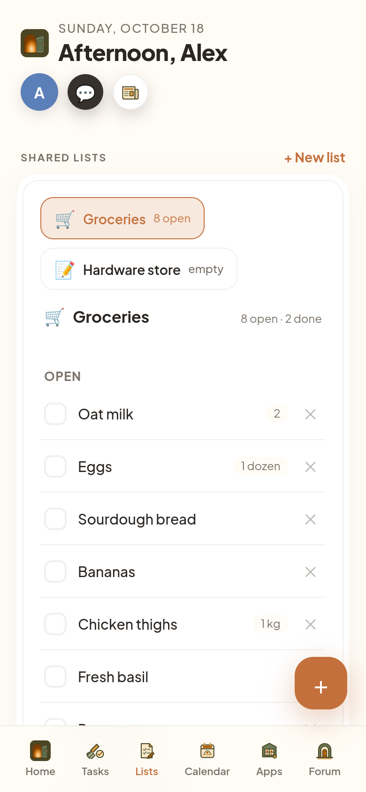
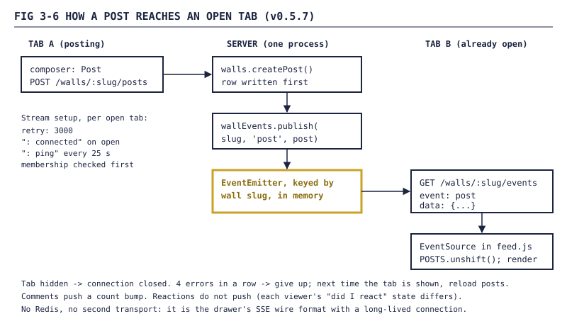

Homestead devlog, Part 3: The Porch: a feed, then rooms
How a complaint about Instagram became a chronological wall, then the front door of the whole app, and how everything else turned into rooms you add one at a time.

FIG 3-1 — The Porch as of v0.5.24, on a demo instance (demo data, users alex and sam). Posts, a reaction row, comments. Newest first, and that's the only sort there is.Part 2 got people through the front door. This part is what they find inside. For three weeks the answer was "everything". On 2026-08-19 it became "a feed, and nothing else", and the rest of the app turned into rooms you add yourself. As before, an agent wrote most of the code; I made the calls and filed the complaints.
1. The Porch Wall
It started with a complaint. Some friends and I wanted to send each other memes, and we hated Instagram for it: you open it to check a DM and get marched through the discovery feed first. The issue that came out of it was titled "Instagram's one good feature, without the algorithm", and one line framed the whole thing:
Homestead's entire thesis is payload without tax.
v0.2.0 shipped the same day, 2026-08-19. Three pieces:
- A media primitive. Content-addressed uploads under
/data/media/, a sharp downscale plus a 320px thumbnail on the server, retention set per upload, and a sweep on the existing 30-minute scheduler. - Walls. Group walls (everyone in a group sees them) and direct walls (shared person to person). Posts, flat comment threads, emoji reactions that toggle idempotently.
- The UI. A composer with drag-drop and paste-from-clipboard, a five-emoji reaction row, and an Older button. No infinite scroll.
1.1 The constitution
The issue had a section headed "Constitutional constraints (non-negotiable, from the founding complaint)": no ranking, no recommendations, no discovery, no strangers, no unread-pressure mechanics. The code holds each one:
| Rule | Where it's enforced |
|---|---|
| No ranking | Every listing in lib/walls.js is ORDER BY created_at. scripts/test-walls.js greps that file and fails CI if any ORDER BY sorts by anything else. |
| No strangers | assertMember(slug, userId) runs before every read and write. |
| No discovery | A wall you're not in returns 404, not 403. You can't learn it exists. |
| No endless feed | 20 posts per page, hard cap 50, an Older button. |
Why "Porch" and not "Feed"? The glossary answers in one line:
the wall is the data model; the Porch is where you sit with it.
The same glossary admits it exists partly because I once called the Porch "the garden?".
2. The reframe: the feed is the door
The same day came the reframe that rearranged the whole app. It opens:
A new user's first login shows a social feed and essentially nothing else.
The reasoning: nobody joins a platform for someone else's chore list. The wall is the only surface with value to a stranger. "It is the door; the rest is the house." You arrive with one room and build the rest.
My rule for scope was that this is "visibility flags on already-shipped features, NOT a plugin architecture." A static registry, a per-user table, conditional rendering. No loader, no marketplace.
Then I added a few rules in the comments:
- One registry for everyone. Built-ins and third-party apps register through the same shape. No private internal fields.
- New modules ship default-off. "Nobody logged in today should ever find a feature they did not ask for."
- Keys are stable. A module can be renamed in the UI without breaking anyone's enablement row. (Hold that thought until the end.)
Two more decisions came from the cold start. Invites go to a wall, not the app, so your first screen has people on it (mechanics in Part 2). And the agent is a module on purpose: it's bring-your-own-key, and the "paste your key" ask should come after someone already likes the place.
3. Modular Homestead (v0.3.0)
v0.3.0 shipped on 2026-08-21.
3.1 The registry
lib/modules.js is a frozen JS object. Each entry has 16 fields, the same 16 a third-party manifest has to have. Here's the Porch entry as it shipped in v0.3.0, trimmed:
const REGISTRY = Object.freeze({
wall: {
key: 'wall',
name: 'Porch',
description: 'A feed of posts from people you share a wall with.',
room: 'porch',
requires: [],
tier: 'core',
url: '/porch.html',
open_mode: 'frame',
scopes: ['read:walls', 'write:walls:post'],
...
default_enabled: true, // Amendment 2: only wall is on by default
},
...
});
const DEFAULT_ENABLED = Object.freeze(['wall']);
lib/registry-validate.js runs at boot and throws on the first drift: a missing or mistyped field, an unknown open_mode, a requires[] pointing at an unregistered key, or a registry key missing from the database's CHECK constraint. Third-party manifests go through the same validateEntryShape at install. Another test greps the repo for hardcoded module keys like 'lists', so nav and layout can only learn about modules from the registry.
3.2 Per-user rooms, and a backfill that did the opposite
Enablement lives in user_modules(user_id, module_key, enabled_at). enabled_at set means on, NULL means off. Rows are never deleted, so turning Chores off doesn't touch a single task.
The first backfill would have quietly undone the whole design. It granted all six modules to every user on every boot, so anyone who signed up later got the full house. Its test asserted the buggy behavior as correct. A review caught it before the rest of the release shipped. The fix is two passes: a one-time grandfather pass giving everyone who existed at migration time all six, then an every-boot pass giving users with zero rows only DEFAULT_ENABLED. A separate test adds a pretend seventh module, recipes, and checks nobody gets it for free.
3.3 Requires and dependents
Chores requires Lists. That's the only edge in v0.3.0, and it still needs rules both ways:

FIG 3-2 — The requires graph and the two refusals. Each refusal comes with an opt-in cascade flag.Without a flag, enableModule throws requires_unmet with the missing list and the route returns 409. The add-a-room sheet retries with withRequirements: true, which enables both in one transaction. Disabling mirrors it with dependents_active and withDependents. Both walk the graph transitively.
3.4 The layout ladder
GET /api/me/layout runs computeLayout() over the user's enabled set and picks one of four shapes:
if (tiles.length === 0) {
layout = 'empty';
} else if (tiles.length === 1) {
layout = 'feed-only';
} else if (tiles.length <= 3) {
layout = 'feed-tabs';
} else {
layout = 'meadow';
}

FIG 3-3 — The ladder. Everyone starts on rung 1. The Meadow is a layout, not a room.So one feed could sit on any rung, the agent pulled the Porch out into public/components/feed.js (HomesteadFeed.mount(target, opts)). A feed-only user is redirected to the standalone Porch page; everyone else gets the same component as a tab in the SPA, found by the registry's room field rather than the string 'wall'.
Honest footnote: v0.3.0 shipped the layout API before the SPA read it. The consumer and the add-a-room sheet at /modules.html landed on 2026-08-23, with a Playwright smoke that checks all four layouts at 390×844.

FIG 3-4 — Room settings on a demo instance (demo data, users alex and sam). This is where you turn rooms on.4. Notifications and @mentions (v0.4.0)
v0.4.0, also 2026-08-21, made notifications per wall. Each member picks a level per wall:
| Level | Wall posts | @mentions of you |
|---|---|---|
all |
yes, bundled | yes |
mentions |
no | yes |
none |
no | no |
New joins default to mentions; existing members kept their old behavior. The resolver in lib/notifications.js runs in a fixed order, and the order is the policy:
} else if (kind === 'wall_post') {
if (level === 'none') return { deliver: false, skippedReason: 'level_none' };
if (level === 'mentions') return { deliver: false, skippedReason: 'level_mentions_no_match' };
}
...
if (isThreadMuted(userId, postId)) return { deliver: false, skippedReason: 'thread_muted' };
if (!force && isInQuietHours(userId, new Date())) return { deliver: false, skippedReason: 'quiet_hours' };
Level decides if. Quiet hours (Part 1) decide when. A muted thread stays muted even when you're mentioned in it. A quiet-hours skip still writes a log row. Posts within 15 minutes collapse into one push ("3 new posts on Memes"); mentions never bundle. And you can only @mention members of that wall.
5. The empty Porch on a fresh install
On 2026-08-24 a fresh install showed "No walls yet". GET /api/walls returned {"walls":[]}.
The seeded wall belonged to the media-club group. The user seed put everyone in household. So the one room every new user gets was a room nobody could see. The smoke test had been hiding it, by granting media-club membership with a raw INSERT INTO user_groups first. The fix seeded a household wall and added an admin sheet for managing walls.
WARNING The real fix was a rule, added to the Definition of Done: verification scripts may not perform setup the product itself cannot perform. If the test needs a database write that no user could do, the test is testing a different product.
A day later, a cousin: the layout API was advertising routes like /lists.html that hadn't existed since the SPA took over. Now every entry has an explicit route, and only the Porch advertises one.
6. Shared lists (v0.4.4)
Lists had been in the registry since v0.3.0 and on for every existing user, but GET /api/lists returned 404. v0.4.4, on 2026-08-28, made it real:
CREATE TABLE IF NOT EXISTS list_items (
id TEXT PRIMARY KEY,
list_id TEXT NOT NULL REFERENCES lists(id) ON DELETE CASCADE,
label TEXT NOT NULL,
...
checked INTEGER NOT NULL DEFAULT 0,
checked_by INTEGER REFERENCES users(id) ON DELETE SET NULL,
...
...
);
A fresh install gets a "Groceries" list. Lists archive instead of deleting, items keep their order, and a checkbox updates instantly and rolls back if the server says no.

FIG 3-5 — The Groceries list on a demo instance (demo data, users alex and sam).7. Two people on one wall
Until 2026-08-30, no two people had been on a Homestead wall at the same time. Then the first outside tester and I were, and the bug reports started.
7.1 One button in the middle
The day before, I'd flagged the phone layout. A bottom bar built for five destinations, holding one, looks broken. My note:
Including just one button in the middle on the phone since there's no other buttons to hit (except the profile / settings or whatever)
I didn't want to walk every screen myself, so an agent did: a fresh account through a real invite, 18 screens at 390×844, in a scripted browser. The Porch landing page had a header, a composer and the feed. No nav, no avatar, no settings, no way to add a room, no back button.
It offered four directions in words. I answered "not familiar enough with these terms. give me an example screenshot of each", so it drew four comps. I picked A, a compact floating button. What shipped: the composer is collapsed by default, a centered 64px FAB opens it, and a "⋯" chip in the header holds password change and logout. Both are opt-in flags on feed.js, so the SPA layouts didn't change.
The comp's chip also listed "Add rooms". The shipped one didn't.
7.2 "need a way to navigate the rest of the app"
My next report. The add-a-room sheet worked, but the only link to it lived inside the SPA, and a one-module user never reaches the SPA: boot() sends them straight to the standalone Porch page.
v0.5.6 added a quiet "+ Add a room" pill there, less prominent than the FAB so posting stays the obvious move. Enable a second room and you move up the ladder into the SPA, so the standalone page only ever handles rung 1.
7.3 "it didn't auto refresh"
The other report, minus a name: "when [they] posted it didn't auto refresh."
The issue for the fix said to reuse the SSE wire format the agent drawer already used, not add a second realtime system: "Two realtime transports in one app is how you get bugs nobody can reproduce." v0.5.7 added lib/wall-events.js, which is 30 lines including comments. The core:
const bus = new EventEmitter();
bus.setMaxListeners(0);
function publish(slug, event, data) {
bus.emit(slug, { event, data });
}
In-memory on purpose: one process, one SQLite file. A multi-process deploy would need something shared, "out of scope until Homestead actually runs more than one process."

FIG 3-6 — The live path. The write happens first, then the publish, then every open tab on that wall gets the post.Posts and comments publish after the write succeeds. The stream checks membership, then stays open with a ping every 25 seconds. In feed.js, a hidden tab closes its connection, and after four errors in a row it gives up and reloads posts when the tab comes back, rather than looking live while stale. Reactions don't push: each viewer's "did I react" state differs, so they were left out on purpose.
NOTE The proof was an agent driving two Chrome tabs through browserless, as two seeded accounts on a local instance. One posted, the other updated without a reload. A scripted browser, not two people.
That gate caught a regression too. A new bottom nav sat at z-index: 50 over the Porch's FAB, pill and toast (40 or below) and ate every tap on the compose button. Now the nav publishes its height as --hs-nav-h and the bottom controls add it to their offset.
8. End of Part 3
Where things stood at v0.5.24:
- A chronological, members-only Porch with a CI guard against anyone sorting by reactions.
- A 16-field module registry that built-ins and third-party apps share, checked at boot.
- Four layouts picked by module count, starting every new account on one room.
- Requires and dependents that refuse with a 409 and an explicit cascade flag, and disable that never deletes.
- Per-wall notification levels, @mentions, mutes, and 15-minute bundles.
- Shared lists with a Groceries list on day one.
- One button in the middle, a door to the next room, and a wall that updates while you're looking at it.
NOTE Remember "keys are stable"? In v0.6.0 the Porch became the Forum. The module key is still
wall, and nobody's enablement row noticed. That's Part 6.
Next, Part 4: calendars and libraries, or what happens when your data lives in someone else's server.